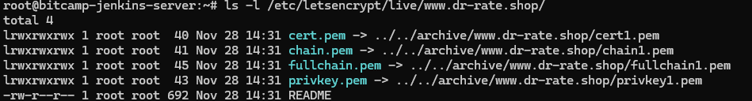
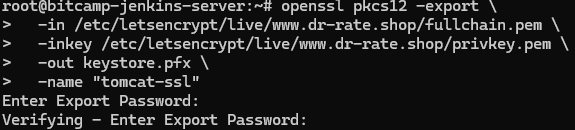

Dockerfile 수정 및
- Dockerfile
# OpenJDK 11 이미지 가져오기
FROM openjdk:11
# 애플리케이션 JAR 파일을 컨테이너의 /app 디렉터리에 복사
# 예시에서는 빌드된 JAR 파일이 target/ 디렉터리에 있다고 가정
COPY ./target/yourapp.jar /app/app.jar
# 컨테이너가 실행될 때 JAR 파일을 실행하도록 설정
ENTRYPOINT ["java", "-jar", "/app/app.jar"]
# 애플리케이션이 사용하는 포트를 노출 (예: 8080)
EXPOSE 8080- nginx.conf
server {
listen 80;
server_name localhost;
location / {
root /usr/share/nginx/html;
index index.html;
try_files $uri /index.html;
}
listen 443 ssl;
ssl_certificate /etc/letsencrypt/live/www.springreact.store/fullchain.pem;
ssl_certificate_key /etc/letsencrypt/live/www.springreact.store/privkey.pem;
ssl_protocols TLSv1.2 TLSv1.3;
ssl_ciphers HIGH:!aNULL:!MD5;
}SSL 인증서 준비
- 설치
sudo apt update
sudo apt install certbot
- 인증서 발급
sudo certbot certonly --standalone -d yourdomain.com
- 인증서 발급 확인
ls -l /etc/letsencrypt/live/www.dr-rate.shop/
- tomcat에서 HTTPS를 사용하기 위해 SSL 인증서를 PKCS12 형식의 keystore 파일로 변환하는 과정
openssl pkcs12 -export \ -in /etc/letsencrypt/live/www.dr-rate.shop-0001/fullchain.pem \ -inkey /etc/letsencrypt/live/www.dr-rate.shop-0001/privkey.pem \ -out keystore.pfx \ -name "springbooy-ssl"- Tomcat은 SSL/TLS를 지원하기 위해 keystore 파일을 필요로 하며, 이 명령은 Let’s Encrypt 인증서를 사용해 keystore 파일을 생성하는 작업을 수행

- 톰켓 컨테이너 생성
docker run -d --name tomcat -p 80:8080 -p 443:443 tomcat:9
- HTTPS 설정 시 Tomcat이 keystore 파일에 접근할 수 있어야 합니다.
- 컨테이너 내부의
conf디렉터리는 Tomcat 설정 파일(server.xml)과 함께 keystore 파일을 저장하기 적합한 위치입니다.
docker cp keystore.pfx tomcat:/usr/local/tomcat/conf/keystore.pfxTomcat 설정
docker exec -it tomcat bash- 톰켓 기본 설정 진행
- 경로
- vi /usr/local/tomcat/conf/server.xml
<Connector port="80" protocol="HTTP/1.1"
connectionTimeout="20000"
redirectPort="443"
maxParameterCount="1000"
/>
========================================================================
<Connector port="443" protocol="org.apache.coyote.http11.Http11NioProtocol"
maxThreads="150" SSLEnabled="true"
maxParameterCount="1000"
ProxyName="www.dr-rate.shop" ProxyPort="443">
<SSLHostConfig>
<Certificate certificateKeystoreFile="conf/keystore.pfx"
certificateKeystorePassword="111" type="RSA" />
</SSLHostConfig>
</Connector>복제
docker cp c4d01eb850fe:/usr/local/tomcat/conf/server.xml ./server.xmldocker cp ./server.xml c4d01eb850fe:/usr/local/tomcat/conf/server.xml